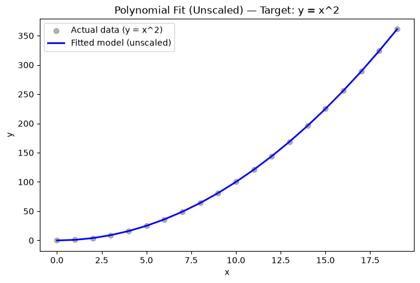
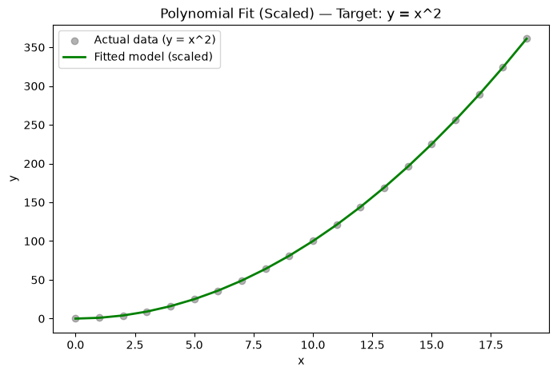
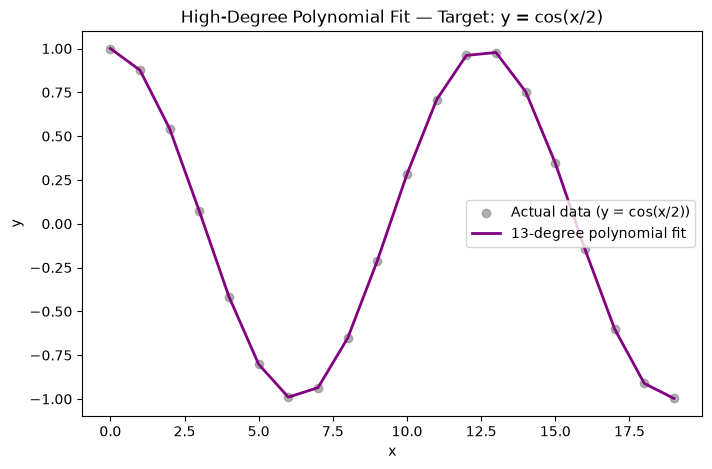

Feature selection context — This time, y = x**2 is the true relationship, but we deliberately engineer three candidate features (x, x**2, x**3) instead of just the one we know is correct. This mirrors a real scenario: you often don’t know in advance which power of a feature actually matters — you let the model tell you, by checking which learned coefficient ends up largest (a small coefficient means that feature contributes little to the prediction).
np.c_[x, x**2, x**3] — Stacks three columns together into one (m, 3) matrix: column 0 is x, column 1 is x**2, column 2 is x**3. Since y was defined using x**2, we’d expect the model to learn a large coefficient for column 1 and small/near-zero coefficients for columns 0 and 2 — because those don’t actually help predict y.
import numpy as np
import matplotlib.pyplot as plt
from sklearn.linear_model import LinearRegression
# create target data
x = np.arange(0, 20, 1)
y = x**2
# engineer features — candidates: x, x^2, x^3 (we don't assume we know x^2 is "the" answer)
X = np.c_[x, x**2, x**3]
model = LinearRegression()
model.fit(X, y)
print(f"w (coefficients for x, x^2, x^3): {model.coef_}")
print(f"b (intercept): {model.intercept_}")
w (coefficients for x, x^2, x^3): [-2.55333915e-14 1.00000000e+00 -2.37196706e-15]
b (intercept): 4.547473508864641e-12
plt.figure(figsize=(8, 5))
plt.scatter(x, y, color='gray', label='Actual data (y = x^2)', alpha=0.6)
plt.plot(x, model.predict(X), color='blue', label='Fitted model (unscaled)', linewidth=2)
plt.xlabel('x')
plt.ylabel('y')
plt.title('Polynomial Fit (Unscaled) — Target: y = x^2')
plt.legend()
plt.show()

Why scaling becomes necessary — Look at the magnitude gap between columns in X above: at x=19, x=361, x**3=6859. These wildly different scales cause two problems: (1) if you were using your own gradient_descent rather than scikit-learn’s direct solver, a single alpha would be far too large for one column and far too small for another, making convergence difficult; (2) even with scikit-learn’s solver, coefficient magnitudes become hard to compare directly across features when their scales differ so much — a large coefficient might just mean “this feature has small values,” not “this feature matters more.”
zscore_normalize_features — Applies the z-score formula column-by-column: \(x_j^{(i)} \leftarrow \frac{x_j^{(i)} - \mu_j}{\sigma_j}\). After this, every column has mean 0 and standard deviation 1 — so coefficients become directly comparable, and the true importance of each feature (x vs x^2 vs x^3) is easier to read off from the learned w values.
np.mean(X, axis=0): mean per column (per feature) — see earlier explanation ofaxis=0np.std(X, axis=0): standard deviation per column, sameaxis=0logic
def zscore_normalize_features(X):
mu = np.mean(X, axis=0) # mean of each feature/column, shape (n,)
sigma = np.std(X, axis=0) # std dev of each feature/column, shape (n,)
X_norm = (X - mu) / sigma # broadcasts mu, sigma across all m rows
return X_norm, mu, sigma
Re-running the same x, x**2, x**3 feature set from Chunk 1, but scaled this time. Compare the resulting model.coef_ against the unscaled version — the coefficient for column 1 (x**2) should stand out much more clearly relative to the other two, now that all three are on the same scale.
X = np.c_[x, x**2, x**3]
X_norm, mu, sigma = zscore_normalize_features(X)
model_scaled = LinearRegression()
model_scaled.fit(X_norm, y)
print(f"w (scaled, for x, x^2, x^3): {model_scaled.coef_}")
print(f"b (scaled): {model_scaled.intercept_}")
w (scaled, for x, x^2, x^3): [ 5.93111900e-13 1.13494714e+02 -4.89459906e-13]
b (scaled): 123.5
plt.figure(figsize=(8, 5))
plt.scatter(x, y, color='gray', label='Actual data (y = x^2)', alpha=0.6)
plt.plot(x, model_scaled.predict(X_norm), color='green', label='Fitted model (scaled)', linewidth=2)
plt.xlabel('x')
plt.ylabel('y')
plt.title('Polynomial Fit (Scaled) — Target: y = x^2')
plt.legend()
plt.show()

Why this example is different — y = np.cos(x/2) is not a polynomial at all — it’s periodic. Polynomial features can still approximate a curve like this reasonably well over a limited range of x, which is why 13 polynomial features (x through x**13) are engineered here — giving the model enough flexibility to bend and curve to match the wave shape, even though no single one of these features is the “true” underlying relationship.
np.cos(x/2) — NumPy’s element-wise cosine function; applied to every value in x at once (vectorized, same pattern as earlier examples), producing one cosine value per x.
Scaling is essential here — with exponents up to x**13, the magnitude gap between columns is enormous (e.g. at x=19: x=19 vs x**13 ≈ 3×10¹⁶), so z-score normalization isn’t optional at this degree; without it, both numerical stability and coefficient interpretability break down.
x = np.arange(0, 20, 1)
y = np.cos(x/2)
X = np.c_[x, x**2, x**3, x**4, x**5, x**6, x**7, x**8, x**9, x**10, x**11, x**12, x**13]
X_norm, mu, sigma = zscore_normalize_features(X)
model_cos = LinearRegression()
model_cos.fit(X_norm, y)
y_pred_cos = model_cos.predict(X_norm)
plt.figure(figsize=(8, 5))
plt.scatter(x, y, color='gray', label='Actual data (y = cos(x/2))', alpha=0.6)
plt.plot(x, y_pred_cos, color='purple', label='13-degree polynomial fit', linewidth=2)
plt.xlabel('x')
plt.ylabel('y')
plt.title('High-Degree Polynomial Fit — Target: y = cos(x/2)')
plt.legend()
plt.show()
